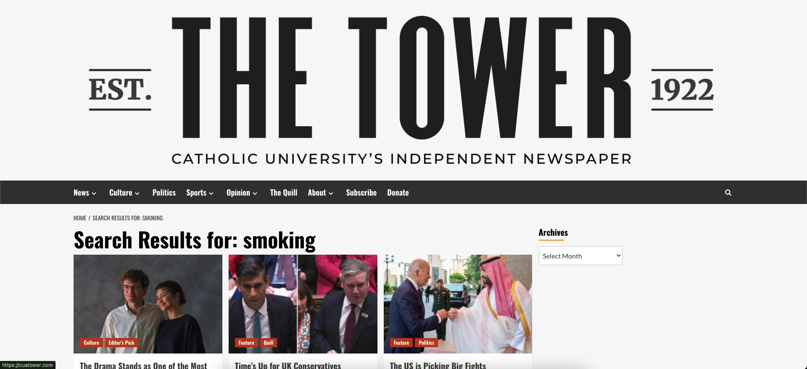

| Input | Output |
|---|---|
| Clicking on Article | Directed to Article page |
| Enter keyword into search bar | Directed to search results page |
| Clicking "Select Month" menu under Archives | Dropdown menu of past months and years opens |
| Clicking on "December 2025" row of Archive dropdown menu | Directed to December 2025 page |
I chose tobacco use as my topic for research and aside from the general lack of resources on the topic I found two glaring weaknesses in the site as I went through my search. The first weakness breaks Heuristic #2: Match between system and real world. While I was browsing search results for the search input “smoking” I noticed that each article was tagged in the bottom left corner of the thumbnail. While I appreciate the fact that there are tags, some of the words used are not words that I was familiar with, for instance two common tags I saw were “Quill” and “Morpheus”. Neither of these terms are familiar to me and once I clicked on the article I was unable to find any explanation for what the two terms refer to. This is an example of a failure to use words and concepts familiar to all users.
The second weakness in the website breaks Heuristic #8: Aesthetics. The giant “The Tower” logo at the top of the screen takes up a lot of space and was disorienting when I was trying to read the menu right below it. I think that a much smaller and more minimalistic logo would be a lot less distracting to a user.

There were many similarities between my heuristics analysis and the user's experience during the usability test. For instance, the first thing the user said after reaching the site was, "Wow! That logo is huge!" They then proceeded to remark that the logo was distracting them throughout the test. Additionally, the user commented that the tags in each article's thumbnail were distracting and did not make any sense. The user noticed the shortcut to the top of the page in the bottom right hand corner and found it intuitive enough that they immediately understood its purpose.
One thing that the user pointed out that I did not notice was the fact that the headings on the main page were not hyperlinks, and that they were used to being able to click on those headings on other sites. Another difference was that they did not like that the archives was present in the right hand corner of every article, and wished that they made it a menu option in the horizontal menu across the top of each page.